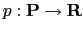
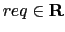
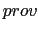
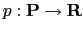
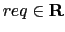
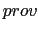
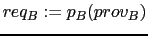
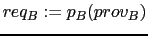
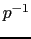

Next: Context
Up: Parametric Contracts
Previous: Interoperability Checks, Substitutability Checks
Contents
Index
Parameterised Contracts as Generalisation of Classical Contracts
While interoperability tests check the requires-interface of a component
against the provides-interface of another component, parameterised
contracts link the provides-interface of one component to the requires-
interface of the same component (see points (2) and (3) in figure
2.7).
The usefulness of parameterised contracts is based on the observation that in
practice often only a subset of a component's functionality is used. This is
especially true for coarse-grained components. In this case, also only a
subset of the functionality described in the requires-interface is actually
used. That means that the component could be used without any problems in
environments where not all dependencies, as described in the requires
interface, are given. Vice versa, if a component does not receive all (but
some) functionality it requires from the environment, it often can deliver a
reasonable subset of its functionality.
Figure 2.7:
Interoperability checks (1) and Requires-parameterised Contract
(2) and Provides-parameterised Contract (3)
|
These facts can be modelled by a set of possible provides-interfaces
 and a set of possible requires-interfaces
and a set of possible requires-interfaces
 and a monotone total bijective mapping
and a monotone total bijective mapping  between them
.2.1 As a
result, each requires-interface
 is now a function of a
provides-interface :
between them
.2.1 As a
result, each requires-interface
 is now a function of a
provides-interface :
 and (because is bijective) each
provides-interface
and (because is bijective) each
provides-interface
 can be modelled as a function of a
requires-interface
:
can be modelled as a function of a
requires-interface
:
 .
.
This mapping is now called parameterised contract, since it
parameterises the precondition with the postcondition of the component and
vice versa. It can be considered as a generalisation of ``classical contract''
which uses a fixed pre- and postcondition. The parameterised contract is
bundled with the component and computes the interfaces of the components on
demand.
For the following, assume component  uses component
uses component  and is used by
component
and is used by
component  . If component uses only a subset of the functionality
offered by we compute a new requires-interface of with the
parameterised contract
. If component uses only a subset of the functionality
offered by we compute a new requires-interface of with the
parameterised contract  :
:
 |
(2.5) |
Note that the new requires-interface  requires possibly less than the
original requires-interface
 (but never more) since
is monotone and
requires possibly less than the
original requires-interface
 (but never more) since
is monotone and
 . When computing the
requires-interface out of a provides-interface (possibly intersected with an
external requires-interface) the parameterised contract is called
provides-parameterised contract.
. When computing the
requires-interface out of a provides-interface (possibly intersected with an
external requires-interface) the parameterised contract is called
provides-parameterised contract.
Likewise, if component does not provide all the functionality required by
, one can compute a new provides-interface  with :
with :
Since is monotone,  is, too. With
 we have
we have
 . In this case we use
a requires-parameterised contract.
. In this case we use
a requires-parameterised contract.
Next: Context
Up: Parametric Contracts
Previous: Interoperability Checks, Substitutability Checks
Contents
Index
Snowball
2007-03-16